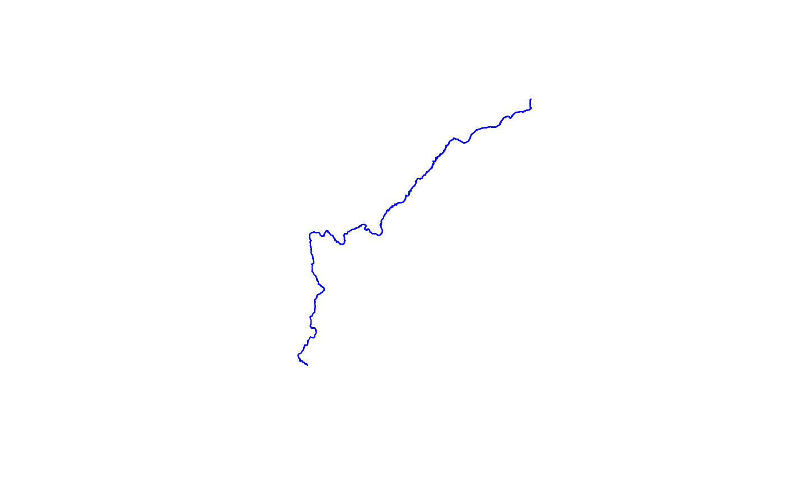
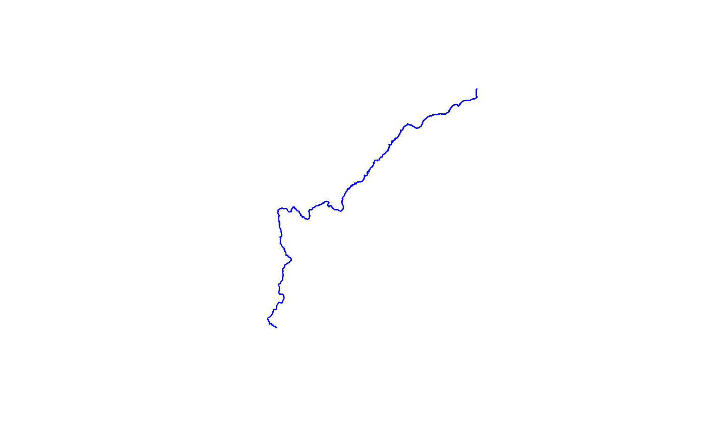

Calls the 3DHP_all web service and returns sf data.frames for the selected layers. See https://hydro.nationalmap.gov/arcgis/rest/services/3DHP_all/MapServer for source data documentation.
get_3dhp(
AOI = NULL,
ids = NULL,
type = NULL,
universalreferenceid = NULL,
t_srs = NULL,
buffer = 0.5
)Arguments
- AOI
sf (MULTI)POINT or (MULTI)POLYGON. An 'area of interest' can be provided as either a location (sf POINT) or area (sf POLYGON) in any Spatial Reference System.
- ids
character vector of id3dhp ids or mainstem uris
- type
character. Type of feature to return ("hydrolocation", "flowline", "waterbody", "drainage area", "catchment"). If NULL (default) a data.frame of available resources is returned
- universalreferenceid
character vector of hydrolocation universal reference ids such as reachcodes
- t_srs
character (PROJ string or EPSG code) or numeric (EPSG code). A user specified - target -Spatial Reference System (SRS/CRS) for returned objects. Will default to the CRS of the input AOI if provided, and to 4326 for ID requests.
- buffer
numeric. The amount (in meters) to buffer a POINT AOI by for an extended search. Default = 0.5
Value
a simple features (sf) object or valid types if no type supplied
Details
The returned object(s) will have the same
Spatial Reference System (SRS) as the input AOI. If a individual or set of
IDs are used to query, then the default CRS of EPSG:4269 is
preserved. In all cases, a user-defined SRS can be passed to t_srs
which will override all previous SRS (either input or default).
All buffer and distance operations are handled internally using in
EPSG:5070 Albers Equal Area projection
Examples
# \donttest{
AOI <- sf::st_as_sfc(sf::st_bbox(c(xmin = -89.56684, ymin = 42.99816,
xmax = -89.24681, ymax = 43.17192),
crs = "+proj=longlat +datum=WGS84 +no_defs"))
# get flowlines and hydrolocations
flowlines <- get_3dhp(AOI = AOI, type = "flowline")
hydrolocation <- get_3dhp(AOI = AOI, type = "hydrolocation")
#> Warning: No sink, spring, waterbody outlet features found in area of interest.
#> Warning: No headwater, terminus, divergence, confluence, catchment outlet features found in area of interest.
waterbody <- get_3dhp(AOI = AOI, type = "waterbody")
if(!is.null(waterbody) & !is.null(flowlines) & !is.null(hydrolocation)) {
plot(sf::st_geometry(waterbody), col = "lightblue", border = "lightgrey")
plot(sf::st_geometry(flowlines), col = "blue", add = TRUE)
plot(sf::st_geometry(hydrolocation), col = "grey", pch = "+", add = TRUE) }
 # given mainstem ids from any source, can query for them in ids.
CO <- get_3dhp(ids = "https://geoconnex.us/ref/mainstems/29559",
type = "flowline")
#> Getting features 0 to 2000 of 4467
#> Getting features 2000 to 4000 of 4467
#> Getting features 4000 to 4467 of 4467
if(!is.null(CO))
plot(sf::st_geometry(CO), col = "blue")

# get all the waterbodies along the CO river
CO_wb <- get_3dhp(ids = unique(CO$waterbodyid3dhp), type = "waterbody")
if(!is.null(CO_wb)) {
plot(sf::st_geometry(CO_wb[grepl("Powell", CO_wb$gnisidlabel),]),
col = "blue", border = "NA") }
# given universalreferenceid (reachcodes), can query for them but only
# for hydrolocations. This is useful for looking up mainstem ids.
get_3dhp(universalreferenceid = unique(hydrolocation$universalreferenceid),
type = "hydrolocation")
#> Warning: No sink, spring, waterbody outlet features found in area of interest.
#> Warning: No headwater, terminus, divergence, confluence, catchment outlet features found in area of interest.
#> Request failed [504]. Retrying in 1 seconds...
#> Request failed [504]. Retrying in 3.7 seconds...
#> No encoding supplied: defaulting to UTF-8.
#> Warning: No reach code, external connection features found in area of interest.
#> NULL
# }
# given mainstem ids from any source, can query for them in ids.
CO <- get_3dhp(ids = "https://geoconnex.us/ref/mainstems/29559",
type = "flowline")
#> Getting features 0 to 2000 of 4467
#> Getting features 2000 to 4000 of 4467
#> Getting features 4000 to 4467 of 4467
if(!is.null(CO))
plot(sf::st_geometry(CO), col = "blue")

# get all the waterbodies along the CO river
CO_wb <- get_3dhp(ids = unique(CO$waterbodyid3dhp), type = "waterbody")
if(!is.null(CO_wb)) {
plot(sf::st_geometry(CO_wb[grepl("Powell", CO_wb$gnisidlabel),]),
col = "blue", border = "NA") }
# given universalreferenceid (reachcodes), can query for them but only
# for hydrolocations. This is useful for looking up mainstem ids.
get_3dhp(universalreferenceid = unique(hydrolocation$universalreferenceid),
type = "hydrolocation")
#> Warning: No sink, spring, waterbody outlet features found in area of interest.
#> Warning: No headwater, terminus, divergence, confluence, catchment outlet features found in area of interest.
#> Request failed [504]. Retrying in 1 seconds...
#> Request failed [504]. Retrying in 3.7 seconds...
#> No encoding supplied: defaulting to UTF-8.
#> Warning: No reach code, external connection features found in area of interest.
#> NULL
# }